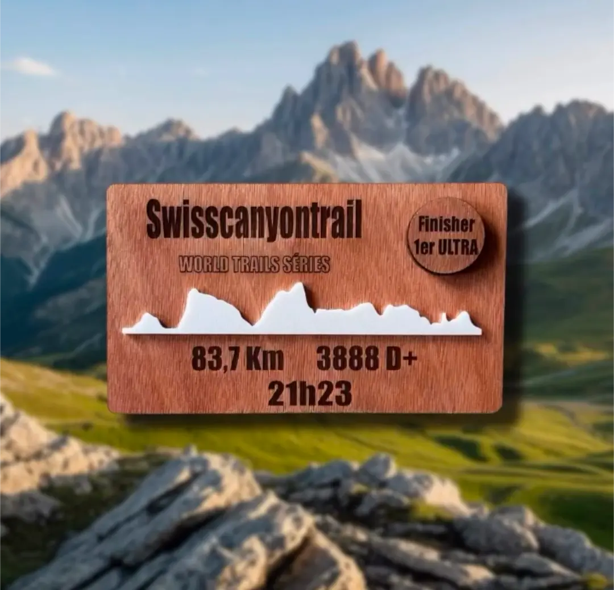
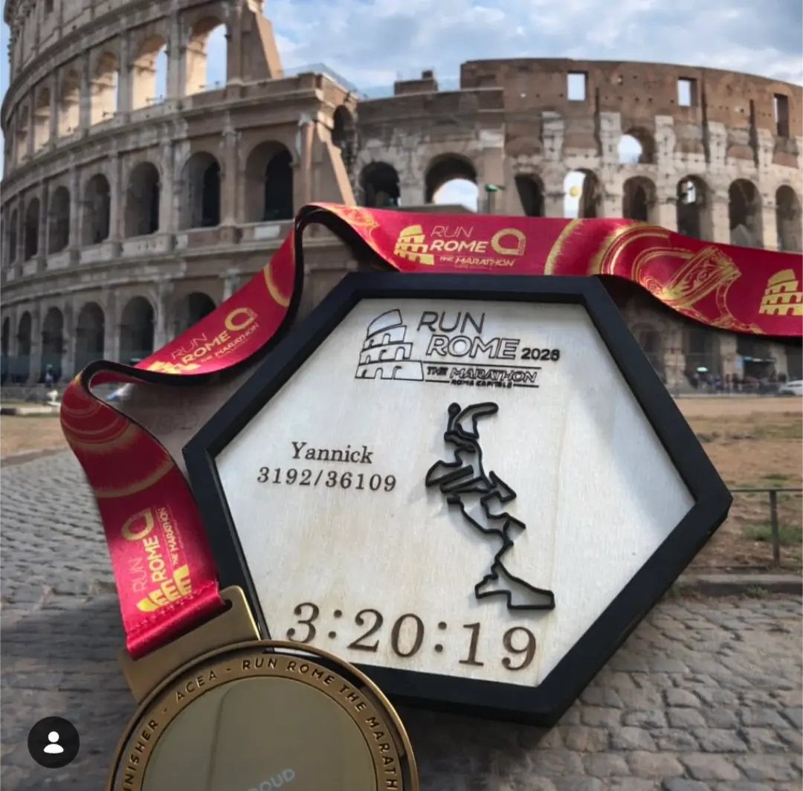
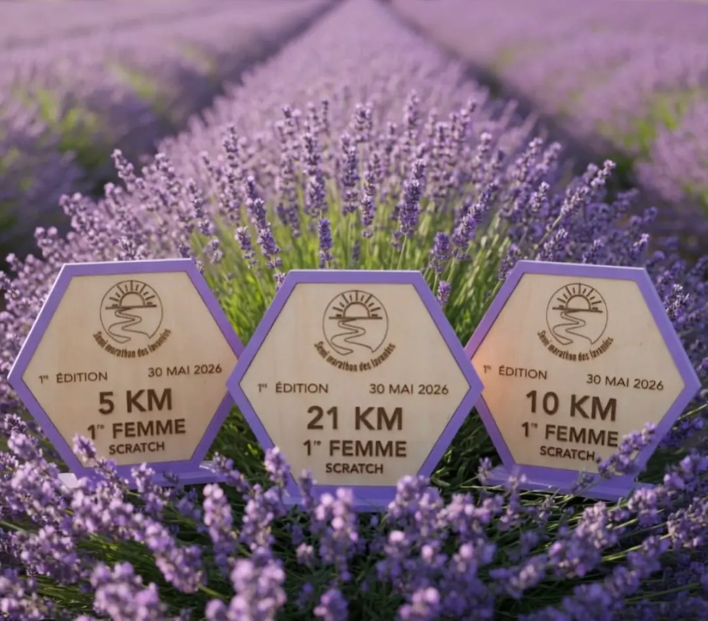
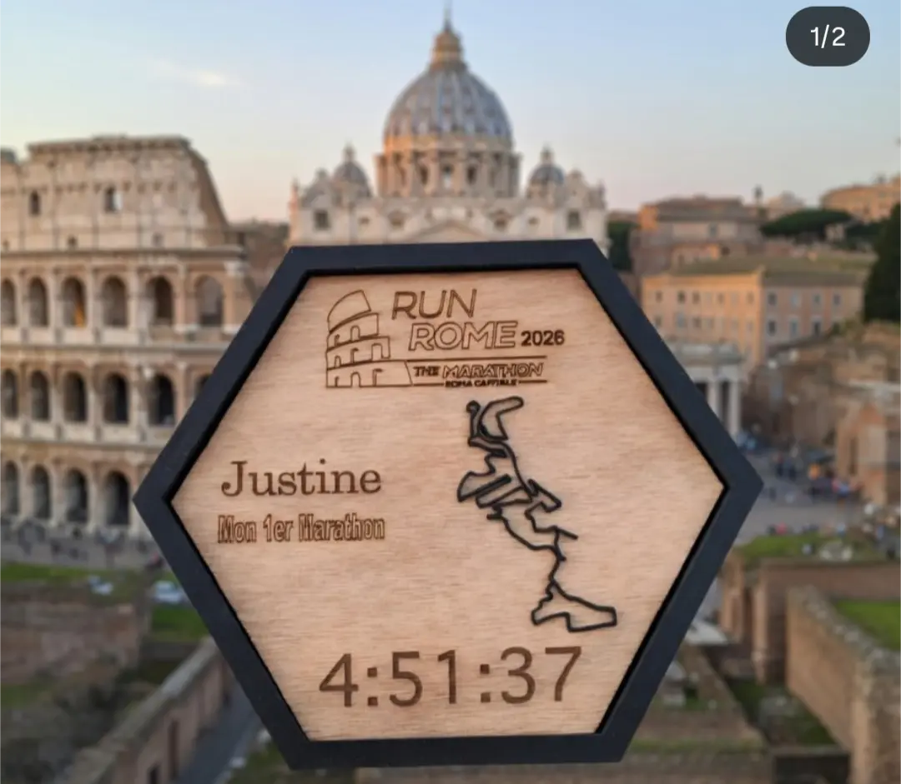
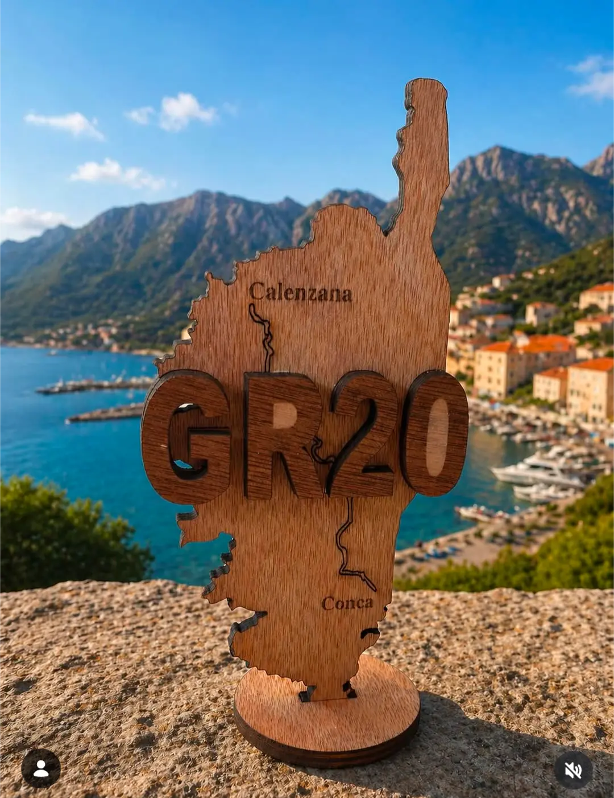
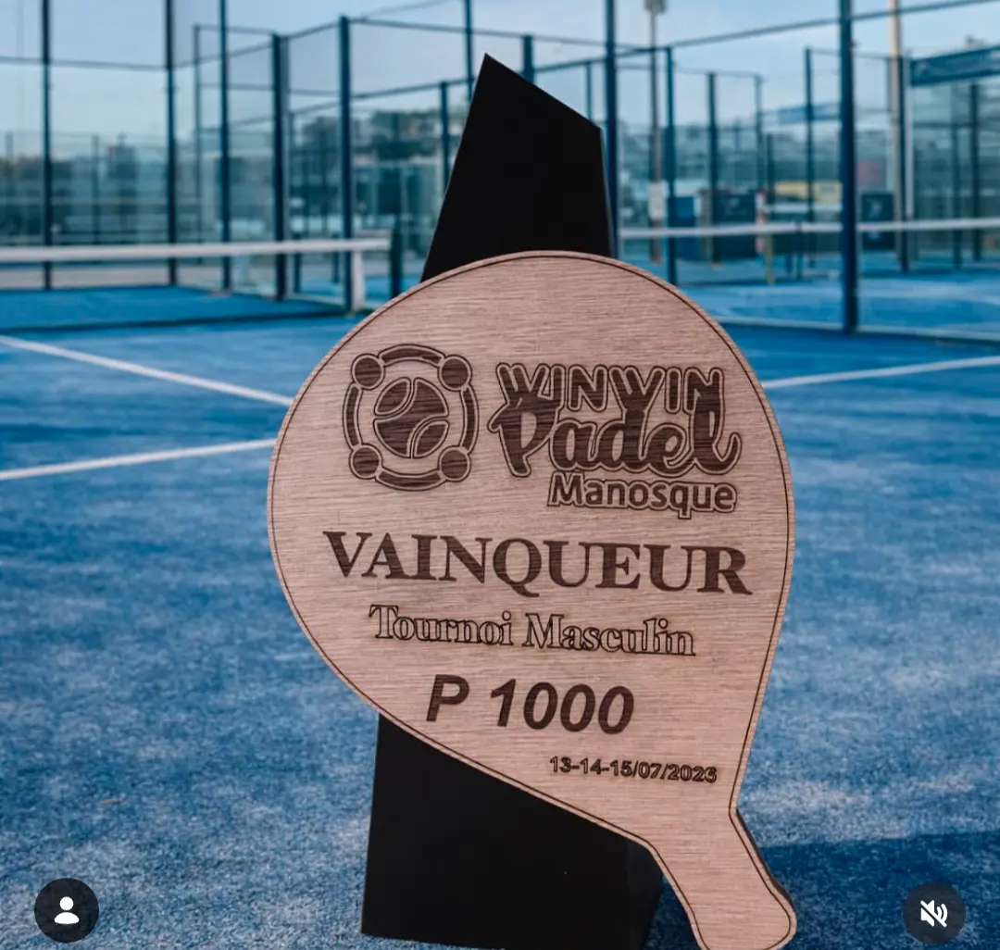
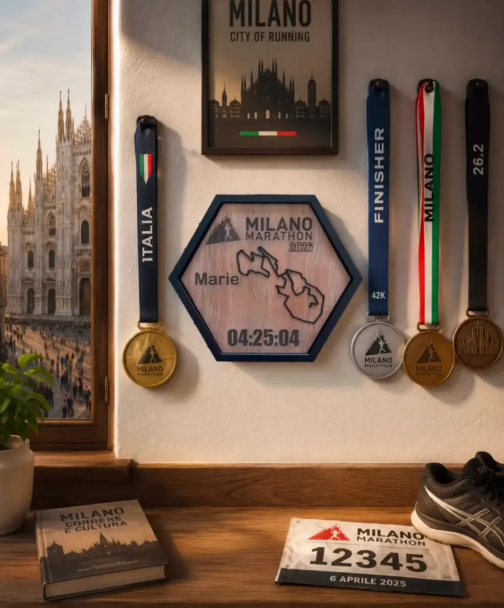

01
01Le profil de ta course
Trace d’Exploit
Une plaque en bois gravée avec le profil réel du parcours, ton chrono et les chiffres qui racontent ton défi.
À partir de 15 €
Créations artisanales dans le Var
Nous transformons le tracé, les chiffres et les émotions de tes plus beaux défis sportifs en souvenirs uniques, gravés dans le bois.

Du parcours au souvenirChaque relief raconte une histoire.
Imaginé pour les passionnés
Fabriqué à la main dans le Var
Expédié en France et à l’international
Nos modèles
Choisis une base, puis personnalise-la. Dimensions, couleurs, informations et finitions s’adaptent à ton projet.
01Le profil de ta course
Une plaque en bois gravée avec le profil réel du parcours, ton chrono et les chiffres qui racontent ton défi.

02Ta trace en relief
Un souvenir graphique qui associe bois gravé et impression 3D pour faire ressortir le tracé de ta course.

03Pour clubs et événements
Des récompenses entièrement sur mesure, imaginées autour de ton sport, de ton territoire et de ton identité.
Plus qu’un objet
“Un souvenir qui sent encore la boue et les cuisses en feu !”— matos_is_running
Comment ça marche ?
Chaque projet est personnalisé. C’est pourquoi tout commence par un devis et se poursuit avec ta validation avant fabrication.
Choisis une base, décris ton idée et joins ton fichier GPX, ton logo ou tes photos.
Nous précisons ensemble les dimensions, les couleurs, les quantités et le délai.
Tu reçois un bon à tirer. La fabrication commence uniquement après ton accord.
Ton objet est fabriqué artisanalement dans le Var, puis expédié ou remis en main propre.
Réalisations
Trail, marathon, triathlon, padel ou événement d’entreprise : aucune histoire ne se ressemble, aucune création non plus.






Leur histoire
“La VVX, c’était 46 km de volcans, de boue et de fierté. Ce souvenir me ramène sur la ligne d’arrivée à chaque regard.”Lucile — Finisher VVX
Questions fréquentes
Un fichier GPX, un logo, une photo, une illustration ou un PDF. Tu peux joindre jusqu’à quatre fichiers à ta demande.
La fabrication prend habituellement environ une semaine après validation du BAT et paiement. Le délai peut varier selon la complexité et la quantité.
Oui. Running, cyclisme, randonnée, triathlon, sports collectifs, événement d’entreprise ou cadeau personnel : toute demande peut être étudiée.
Oui. Les frais de port sont calculés selon la destination et ajoutés au devis.
Une idée en tête ?
Parle-nous de ton défi ou de ton événement. Nous imaginerons ensemble un objet qui lui ressemble.
Demander un devis ↗